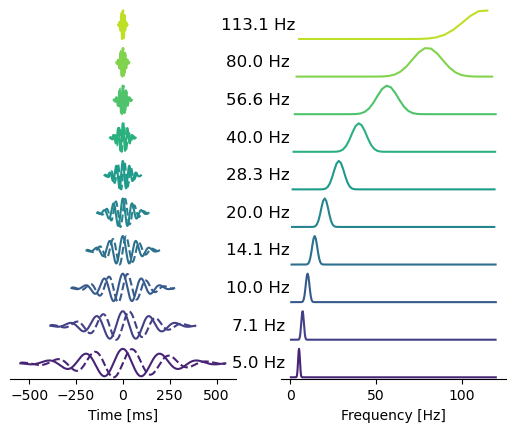

from scipy.linalg import svdMorlet Wavelets for M/EEG
Defnining families of Morlet Wavelets
The following functions facilitate defining families of Morlet Wavelets. This is useful to e.g. plot or analyze properties of the wavelets us ed for feature extraction. These functions are used internally by the feature-computation functions below.
define_wavelets
define_wavelets (foi:numpy.ndarray, sigma_time:numpy.ndarray, sfreq:float, kernel_width:int=5, window_shift:float=0.25, density:str='oct')
Compute Morelt Wavelets from frequency-domain parametrization.
| Type | Default | Details | |
|---|---|---|---|
| foi | ndarray | The range of center frequencies. | |
| sigma_time | ndarray | The temporal width (standard deviations) at a given frequency. | |
| sfreq | float | The sampling frequency in Hz. | |
| kernel_width | int | 5 | The width of the kernel in standard deviations, leading to truncation. |
| window_shift | float | 0.25 | Controls the spacing of the sliding windows proportionally to the |
| density | str | oct | Scaling of the power spectrum in Hz or per octave (‘oct’). Defaults to ‘oct’. |
| Returns | list | The list of complex Morlet wavelets alongside the scaling applied, the effective number of samples and the amount of samples shifted in time, ordered by input frequencies. |
define_frequencies
define_frequencies (foi_start:float=2, foi_end:float=32, delta_oct:Optional[float]=None, bw_oct:float=0.5, qt:Optional[float]=None, freq_shift_factor:int=1)
Construct log-space equidistant frequency bins with proportional variance.
| Type | Default | Details | |
|---|---|---|---|
| foi_start | float | 2 | The lowest frequency of interest. |
| foi_end | float | 32 | The highest frequency of interest. |
| delta_oct | Optional | None | Controls the frequency resolution. If None, defaults |
| bw_oct | float | 0.5 | The bandwidth of the Wavelets in octaves. Larger band width lead to more smoothing. |
| qt | Optional | None | The bandwidth of the Wavelets expressed in characteristic Morlet parameter Q (overriding bw_oct). |
| freq_shift_factor | int | 1 | Allows shifting the frequency spectrum in logarithmic space (in octave units). |
| Returns | (<class ‘numpy.ndarray’>, <class ‘numpy.ndarray’>, <class ‘numpy.ndarray’>, <class ‘numpy.ndarray’>) | foi, the expaneded frequency range, sigma_time, the temporal width (SD), sigma_freq, the spectral width. |
Computing spectral features from families of Morlet Wavelets.
The following functions provide NumPy and an MNE interfaces for computing spectral features features from M/EEG input signals for a defined family of Morlet wavelets.
The spectral measures implemented include:
Power measures
pow: power spectral densitycsd: cross-spectral densitycov: covariance estimated from wavelet convolutons (Bomatter et al. 2023)
Measures of phase interaction (mixed, coherence type)
coh: coherence (Varela et al. 2001)icoh: imaginary coherence (Nolte et al. 2004)gim: global interaction measure (Ewald et al. 2012)
More specific measures of phase interaction
plv: phase-locking value (Lachaux et al. 1999)pli: phase-locking index (Stam, Nolte, and Daffertshofer 2007)dwpli: debiased squared weighted phase-lag index (Vinck et al. 2011)
Power envelope correlations
r_plain: power envelope correlation (log of rectified wavelet-convoluted timeseries) (Hipp et al. 2012)r_orth: orthogonalized power envelope correlation (Hipp et al. 2012)
compute_spectral_features
compute_spectral_features (inst:Union[mne.io.fiff.raw.Raw,mne.epochs.Epo chs], delta_oct:Optional[float]=None, bw_oct:float=0.5, qt:Optional[float]=None, foi_start:float=2, foi_end:float=32, window_shift:float=0.25, kernel_width:int=5, freq_shift_factor:int=1, allow_fraction_nan:int=0, features:Union[tuple,list]=('pow',), density:str='oct', nan_from_annotations:bool=False, prepend_nan_epochs:bool=False, rank:Optional[int]=None, verbose:Union[bool,int,str]=False)
| Type | Default | Details | |
|---|---|---|---|
| inst | Union | An MNE object representing raw (continous) or epoched data. | |
| delta_oct | Optional | None | Controls the frequency resolution. If None, defaults |
| bw_oct | float | 0.5 | The bandwidth of the Wavelets in octaves. Larger band width lead to more smoothing. |
| qt | Optional | None | The bandwidth of the Wavelets expressed in characteristic Morlet parameter Q (overriding bw_oct). |
| foi_start | float | 2 | The lowest frequency of interest. |
| foi_end | float | 32 | The highest frequency of interest. |
| window_shift | float | 0.25 | Controls the spacing of the sliding windows proportionally to the |
| kernel_width | int | 5 | The width of the kernel in standard deviations, leading to truncation. |
| freq_shift_factor | int | 1 | Allows shifting the frequency spectrum in logarithmic space (in octave units). |
| allow_fraction_nan | int | 0 | The fraction of NA values allowed. |
| features | Union | (‘pow’,) | The spectral featueres to be computed. |
| density | str | oct | Scaling of the power spectrum in Hz or per octave (‘oct’). Defaults to ‘oct’. |
| nan_from_annotations | bool | False | If annotations should be converted to missing values. Currently only |
| prepend_nan_epochs | bool | False | Whether to add a Nan value at the beginning of each epoch to avoid boundary artifacts. |
| rank | Optional | None | numeric rank of the input |
| verbose | Union | False | mne.verbose for details. Should only be passed as a keyword argument. |
| Returns | (<class ‘types.SimpleNamespace’>, <class ‘types.SimpleNamespace’>) | The features with, e.g., .pow, .cov as attributes |
compute_spectral_features_array
compute_spectral_features_array (data:numpy.ndarray, sfreq:float, delta_oct:Optional[float]=None, bw_oct:float=0.5, qt:Optional[float]=None, foi_start:float=2, foi_end:float=32, window_shift:float=0.25, kernel_width:int=5, freq_shift_factor:int=1, allow_fraction_nan:int=0, features:Union[tuple,list]=('pow',), density:str='oct', rank:Optional[int]=None, verbose:Union[bool,int,str]=False)
| Type | Default | Details | |
|---|---|---|---|
| data | ndarray | The continously sampled input data (may contain NaNs), | |
| sfreq | float | The sampling frequency in Hz. | |
| delta_oct | Optional | None | Controls the frequency resolution. If None, defaults |
| bw_oct | float | 0.5 | The bandwidth of the Wavelets in octaves. Larger band width lead to more smoothing. |
| qt | Optional | None | The bandwidth of the Wavelets expressed in characteristic Morlet parameter Q (overriding bw_oct). |
| foi_start | float | 2 | The lowest frequency of interest. |
| foi_end | float | 32 | The highest frequency of interest. |
| window_shift | float | 0.25 | Controls the spacing of the sliding windows proportionally to the |
| kernel_width | int | 5 | The width of the kernel in standard deviations, leading to truncation. |
| freq_shift_factor | int | 1 | Allows shifting the frequency spectrum in logarithmic space (in octave units). |
| allow_fraction_nan | int | 0 | The fraction of NA values allowed. |
| features | Union | (‘pow’,) | The spectral featueres to be computed. |
| density | str | oct | Scaling of the power spectrum in Hz or per octave (‘oct’). Defaults to ‘oct’. |
| rank | Optional | None | numeric rank of the input |
| verbose | Union | False | mne.verbose for details. Should only be passed as a keyword argument. |
| Returns | (<class ‘types.SimpleNamespace’>, <class ‘types.SimpleNamespace’>) | The features with, e.g., .pow, .cov as attributes |
Helper functions
To facilitate the integration with the MNE workflow, a simple wrapper can map outputs to the MNE Spectrum class.
spectrum_from_features
spectrum_from_features (data:numpy.ndarray, freqs:numpy.ndarray, inst_info:mne._fiff.meas_info.Info)
Create MNE averaged power spectrum object from features
| Type | Details | |
|---|---|---|
| data | ndarray | spectral features, e.g. power, shape(n_channels, n_frequencies) |
| freqs | ndarray | frequencies, shape(n_frequencies) |
| inst_info | Info | the meta data of the MNE instance used for computing the features |
| Returns | Spectrum | the MNE power spectrum object |
Vectorized correlation coefficients.
ro_corrcoef
ro_corrcoef (x:numpy.ndarray, y:numpy.ndarray, dim:int)
| Type | Details | |
|---|---|---|
| x | ndarray | the seed (assuming time samples on last axis) |
| y | ndarray | the targets (assuming time samples on last axis) |
| dim | int | number of dimensions |
| Returns | SimpleNamespace | the computed correlation values and statistics: |
def ro_pinv(
A: np.ndarray, # 2d matrix
r: Union[int, None]=None, # numeric rank
) -> np.ndarray: # the pseudoinverse of A
if r is None:
r = A.shape[0]
U, s, Vt = svd(A, full_matrices=False)
s_inv = np.diag(1 / s[:r])
X = Vt.T[:, :r] @ s_inv @ U[:, :r].T
return X
A = np.array(
[[-1.6747, -0.4051, 1.5477],
[-0.7688, -0.5308, 0.6110],
[-1.6105, 0.3157, -0.1422]]
)
A_inv = ro_pinv(A)
assert np.allclose(A, ro_pinv(A_inv))
assert np.allclose(A @ A_inv, np.eye(3))
assert np.allclose(A_inv @ A, np.eye(3))
A_invarray([[ 0.11085518, -0.40693121, -0.54194378],
[ 1.03227358, -2.57819711, 0.15732342],
[ 1.03626232, -1.1151485 , -0.54523585]])bw2qt
bw2qt (bw:float)
| Type | Details | |
|---|---|---|
| bw | float | the Wavelet’s bandwidth |
| Returns | float | characteristic Morlet parameter |
qt2bw
qt2bw (qt:float)
| Type | Details | |
|---|---|---|
| qt | float | characteristic Morlet parameter |
| Returns | float | the Wavelet’s bandwidth |
Plot time and frequency domain representations of the Morlet wavelet family.
plot_wavelet_family
plot_wavelet_family (wavelets:list, foi:numpy.ndarray, sampling_rate:float=1000.0, cmap:matplotlib.colors.C olormap=<matplotlib.colors.ListedColormap object at 0x149626f50>, f_scale:str='linear', scale:Union[float,int]=4, fmin:Union[float,int]=0, fmax:Union[float,int]=120)
| Type | Default | Details | |
|---|---|---|---|
| wavelets | list | List of wavelets and associated parameters. | |
| foi | ndarray | Frequencies of interest. | |
| sampling_rate | float | 1000.0 | Wavelet frequency. Inverse of the time separating two points. |
| cmap | Colormap | <matplotlib.colors.ListedColormap object at 0x149626f50> | Colormap. |
| f_scale | str | linear | X-axis scale for the power spectra. ‘log’ | ‘linear’. |
| scale | Union | 4 | Window scaling factor. If <1 the wavelet will be cropped. If >1 wavelet will be padded with 0 leading to a smoother frequency domain representation. |
| fmin | Union | 0 | Min frequency to display. |
| fmax | Union | 120 | Max frequency to display, |
| Returns | Figure |
bw_oct = 0.5
delta_oct = 0.5 # one octave spacing between frequencies of interest (foi)
sampling_rate = 1e3
foi, sigma_time, sigma_freq, *_ = define_frequencies(
foi_start=5, foi_end=120, delta_oct=delta_oct, bw_oct=bw_oct
)
wavelets = define_wavelets(
foi,
sigma_time,
sfreq=sampling_rate
)
plot_wavelet_family(wavelets, foi)
plt.show()
This helper computes correlation coefficients and related statistics, including hypothesis tests from input vectors or matricess. The correlations are between either the input vector x and vector y or all columns of y or between each column of x and the corresponding colymn in y with the same index.
rng = np.random.RandomState(42)
x = rng.random_sample((100, 1)).T
y = rng.random_sample((100, 3)).T
out = ro_corrcoef(x, y, 2)
print(out.r) # correlation between pairs of columns in x and y
print(out.p) # associated p values[-0.14794559 0.10328645 0.03207745]
[0.14184577 0.30648903 0.75137784]More unit tests and validation
The tests below establish equivalence up to a given decimal with the original Matlab code.
def read_testing_data():
raw = mne.io.read_raw(
mne.datasets.testing.data_path() / 'MEG/sample/sample_audvis_trunc_raw.fif'
)
raw.pick('eeg')
raw.drop_channels('EEG 053')
raw.load_data()
return raw
def get_matlab_results():
testing_path = Path().cwd() / 'data'
matlab_results = loadmat(
testing_path / 'mne_meeglet_testing_data.mat', squeeze_me=True
)
mat_results = [
matlab_results[f'out{kk}'] for kk in (1, 2, 3)
]
return mat_results, matlab_resultsif False: # testing & exploring testing data
raw = read_testing_data()
plt.figure(figsize=(10, 6))
plt.plot(raw.times, read_testing_data().get_data().T * 1e6);
plt.ylabel(f'EEG $\mu V$')
plt.xlabel('Time [s]')
plt.xlim(0, raw.times[-1]);
plt.ylim(-100, 200);def test_compare_matlab_vs_python():
"Test spectral features array-interface against Matlab implementation."
raw = read_testing_data()
dat = raw.get_data() * 1e6
dat[:, 4999:5050] = np.nan
sfreq = raw.info['sfreq']
print(
dat.shape,
sfreq
)
mat_results, matlab_results = get_matlab_results()
features = [
'pow', 'pow_geo', 'pow_median', 'pow_var', 'csd', 'cov', 'gim',
'coh', 'icoh', 'plv', 'pli', 'dwpli', 'r_plain', 'r_orth'
]
cfg1 = dict(
data=dat,
sfreq=sfreq,
bw_oct=0.5,
foi_start=2,
foi_end=32,
window_shift=0.25,
kernel_width=5,
allow_fraction_nan=0,
freq_shift_factor=1,
features=features,
density='oct'
)
cfg2 = dict(cfg1)
cfg2['density'] = 'Hz'
cfg2['bw_oct'] = None
cfg2['qt'] = 7
cfg3 = dict(cfg1)
cfg3['allow_fraction_nan'] = 0.1
cfg3['rank'] = 20
out1, info1 = compute_spectral_features_array(**cfg1)
# test that basic frequency definitions & valid samples match
assert_array_almost_equal(
info1.foi,
matlab_results['out1']['foi'].ravel()[0]
)
assert_array_almost_equal(
info1.n_valid_total,
matlab_results['out1']['n'].ravel()[0]
)
assert_array_almost_equal(
info1.qt,
matlab_results['out1']['qt'].ravel()[0]
)
assert_array_almost_equal(
info1.bw_oct,
matlab_results['out1']['bw_oct'].ravel()[0]
)
out2, _ = compute_spectral_features_array(**cfg2)
out3, _ = compute_spectral_features_array(**cfg3)
# with nans, powers should be different if nans are present VS not present.
assert np.any(np.not_equal(out1.pow, out3.pow))
pyt_results = [out1, out2, out3]
for ii, (mat_res, pyt_res) in enumerate(zip(mat_results, pyt_results)):
for meas in features:
decimal = {
'pow': 12,
'pow_geo': 13,
'pow_median': 13,
'pow_var': 9,
'csd': 12,
'cov': 12,
'gim': 8 if ii < 2 else 12,
'coh': 14,
'icoh': 14,
'plv': 14,
'pli': 14, # XXX
'dwpli': 13,
'r_plain': 10,
'r_orth': 10
}[meas]
x = mat_res[meas].tolist()
y = getattr(pyt_res, meas)
if meas in ('r_orth'): # handle diagonals
for ii in range(x.shape[-1]):
x[..., ii].flat[::x.shape[0] + 1] = np.nan
for ii in range(y.shape[-1]):
y[..., ii].flat[::y.shape[0] + 1] = np.nan
x_flat = x.flatten()
y_flat = y.flatten()
assert_array_almost_equal(x_flat, y_flat, decimal=decimal)
cfg4 = dict(cfg3)
test_compare_matlab_vs_python()Opening raw data file /Users/engemand/mne_data/MNE-testing-data/MEG/sample/sample_audvis_trunc_raw.fif...
Read a total of 4 projection items:
PCA-v1 (1 x 102) idle
PCA-v2 (1 x 102) idle
PCA-v3 (1 x 102) idle
Average EEG reference (1 x 60) idle
Range : 12900 ... 18906 = 42.956 ... 62.955 secs
Ready.
Removing projector <Projection | PCA-v1, active : False, n_channels : 102>
Removing projector <Projection | PCA-v2, active : False, n_channels : 102>
Removing projector <Projection | PCA-v3, active : False, n_channels : 102>
Reading 0 ... 6006 = 0.000 ... 20.000 secs...
(59, 6007) 300.3074951171875@requires_testing_data
def test_meg_eeg_data_handling():
"Test handling of appropriate input data"
fname = (Path(mne.datasets.testing.data_path()) / 'MEG' / 'sample' /
'sample_audvis_trunc_raw.fif')
raw = mne.io.read_raw_fif(fname).load_data()
raw_no_meeg = raw.copy().pick(['stim'])
# test type handling: no relvant data
with pytest.raises(ValueError) as excinfo:
out, info = compute_spectral_features(raw_no_meeg)
assert "Currently only supporting EEG or MEG data" in str(excinfo.value)
del raw_no_meeg
# test type handling: data types not unique
raw_grad_mag = raw.copy().pick(['meg'])
for this_raw in (raw, raw_grad_mag):
with pytest.raises(ValueError) as excinfo:
out, info = compute_spectral_features(this_raw)
assert ('Currently only supporting unique sensor types at once. '
'Please pick your data types.') in str(excinfo.value)
del raw_grad_mag
# Test setting of correct units\
data = [raw.copy().pick(['eeg']),
raw.copy().pick(['mag']),
raw.copy().pick(['grad'])]
for density in ('Hz', 'oct'):
for this_raw, data_type in zip(data, ('eeg', 'mag', 'grad')):
out, info = compute_spectral_features(this_raw, density=density)
data_unit = ''
if 'eeg' in this_raw:
data_unit = 'V'
elif 'mag' in this_raw:
data_unit = 'T'
elif 'grad' in this_raw:
data_unit = 'T/cm'
data_unit_expected = f'{data_unit}²/{"Hz" if density == "Hz" else "oct"}'
assert info.unit == data_unit_expected
test_meg_eeg_data_handling()Opening raw data file /Users/engemand/mne_data/MNE-testing-data/MEG/sample/sample_audvis_trunc_raw.fif...
Read a total of 4 projection items:
PCA-v1 (1 x 102) idle
PCA-v2 (1 x 102) idle
PCA-v3 (1 x 102) idle
Average EEG reference (1 x 60) idle
Range : 12900 ... 18906 = 42.956 ... 62.955 secs
Ready.
Reading 0 ... 6006 = 0.000 ... 20.000 secs...
Removing projector <Projection | PCA-v1, active : False, n_channels : 102>
Removing projector <Projection | PCA-v2, active : False, n_channels : 102>
Removing projector <Projection | PCA-v3, active : False, n_channels : 102>
Removing projector <Projection | Average EEG reference, active : False, n_channels : 60>
Removing projector <Projection | Average EEG reference, active : False, n_channels : 60>
Removing projector <Projection | PCA-v1, active : False, n_channels : 102>
Removing projector <Projection | PCA-v2, active : False, n_channels : 102>
Removing projector <Projection | PCA-v3, active : False, n_channels : 102>
Removing projector <Projection | Average EEG reference, active : False, n_channels : 60>
Removing projector <Projection | PCA-v1, active : False, n_channels : 102>
Removing projector <Projection | PCA-v2, active : False, n_channels : 102>
Removing projector <Projection | PCA-v3, active : False, n_channels : 102>
Removing projector <Projection | Average EEG reference, active : False, n_channels : 60>def test_regularized_covariance():
"Test spectral features array-interface against Matlab implementation."
matlab_results = get_matlab_results()
raw = read_testing_data()
dat = raw.get_data() * 1e6
dat[:, 4999:5050] = np.nan
cfg1 = dict(
data=dat,
sfreq=raw.info['sfreq'],
bw_oct=0.5,
foi_start=2,
foi_end=32,
window_shift=0.25,
kernel_width=5,
allow_fraction_nan=0,
freq_shift_factor=1,
features=('cov', 'cov_oas'),
density='oct'
)
out1, info = compute_spectral_features_array(**cfg1)
# short data, ill conditioned covariances ...
assert not all(pyriemann.utils.test.is_pos_def(C) for C in out1.cov.T)
# ... fixed by regularization
assert all(pyriemann.utils.test.is_pos_def(C) for C in out1.cov_oas.T)
# Test that regularization improves matrix rank (affected due to short signal).
for ii in range(len(info.foi)):
assert np.linalg.matrix_rank(out1.cov[..., ii] < out1.cov_oas[..., ii])
assert np.linalg.matrix_rank(out1.cov_oas[..., ii]) == dat.shape[0]
test_regularized_covariance()Opening raw data file /Users/engemand/mne_data/MNE-testing-data/MEG/sample/sample_audvis_trunc_raw.fif...
Read a total of 4 projection items:
PCA-v1 (1 x 102) idle
PCA-v2 (1 x 102) idle
PCA-v3 (1 x 102) idle
Average EEG reference (1 x 60) idle
Range : 12900 ... 18906 = 42.956 ... 62.955 secs
Ready.
Removing projector <Projection | PCA-v1, active : False, n_channels : 102>
Removing projector <Projection | PCA-v2, active : False, n_channels : 102>
Removing projector <Projection | PCA-v3, active : False, n_channels : 102>
Reading 0 ... 6006 = 0.000 ... 20.000 secs...References
Bomatter, Philipp, Joseph Paillard, Pilar Garces, Joerg F Hipp, and Denis A Engemann. 2023. “Machine Learning of Brain-Specific Biomarkers from EEG.” bioRxiv.
Ewald, Arne, Laura Marzetti, Filippo Zappasodi, Frank C Meinecke, and Guido Nolte. 2012. “Estimating True Brain Connectivity from EEG/MEG Data Invariant to Linear and Static Transformations in Sensor Space.” Neuroimage 60 (1): 476–88.
Hipp, Joerg F, David J Hawellek, Maurizio Corbetta, Markus Siegel, and Andreas K Engel. 2012. “Large-Scale Cortical Correlation Structure of Spontaneous Oscillatory Activity.” Nature Neuroscience 15 (6): 884–90.
Lachaux, Jean-Philippe, Eugenio Rodriguez, Jacques Martinerie, and Francisco J. Varela. 1999. “Measuring Phase Synchrony in Brain Signals.” Human Brain Mapping 8 (4): 194–208.
Nolte, Guido, Ou Bai, Lewis Wheaton, Zoltan Mari, Sherry Vorbach, and Mark Hallett. 2004. “Identifying True Brain Interaction from EEG Data Using the Imaginary Part of Coherency.” Clinical Neurophysiology 115 (10): 2292–2307.
Stam, Cornelis J, Guido Nolte, and Andreas Daffertshofer. 2007. “Phase Lag Index: Assessment of Functional Connectivity from Multi Channel EEG and MEG with Diminished Bias from Common Sources.” Human Brain Mapping 28 (11): 1178–93.
Varela, Francisco, Jean-Philippe Lachaux, Eugenio Rodriguez, and Jacques Martinerie. 2001. “The Brainweb: Phase Synchronization and Large-Scale Integration.” Nature Reviews Neuroscience 2 (4): 229–39.
Vinck, Martin, Robert Oostenveld, Marijn Van Wingerden, Franscesco Battaglia, and Cyriel MA Pennartz. 2011. “An Improved Index of Phase-Synchronization for Electrophysiological Data in the Presence of Volume-Conduction, Noise and Sample-Size Bias.” Neuroimage 55 (4): 1548–65.